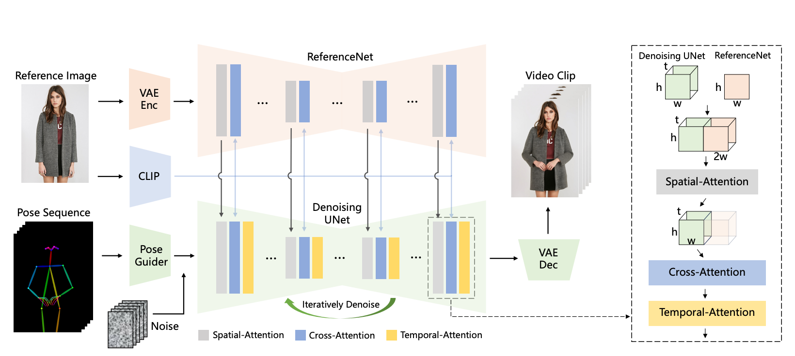
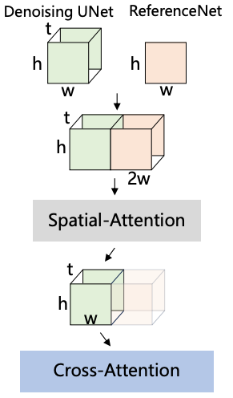
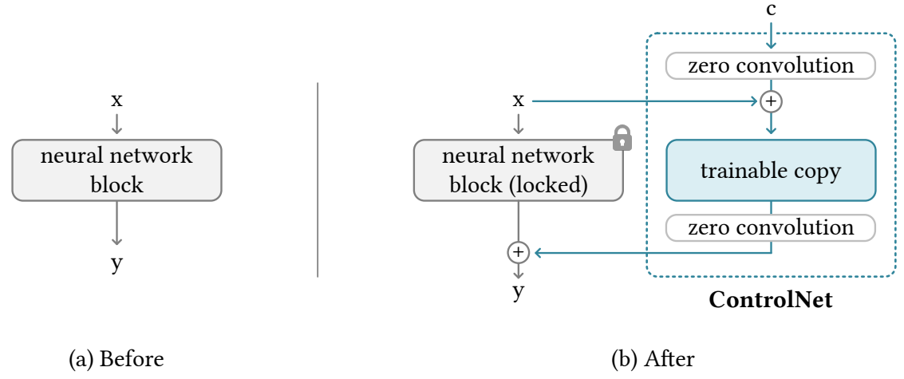
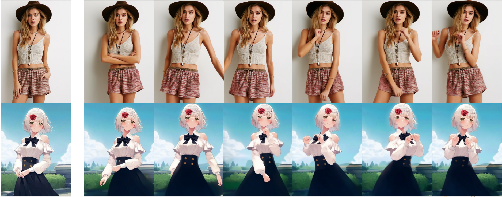
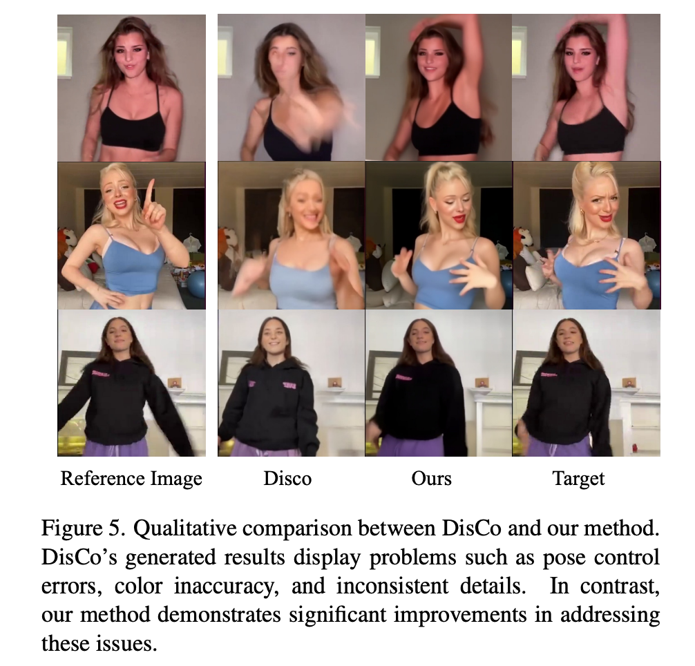
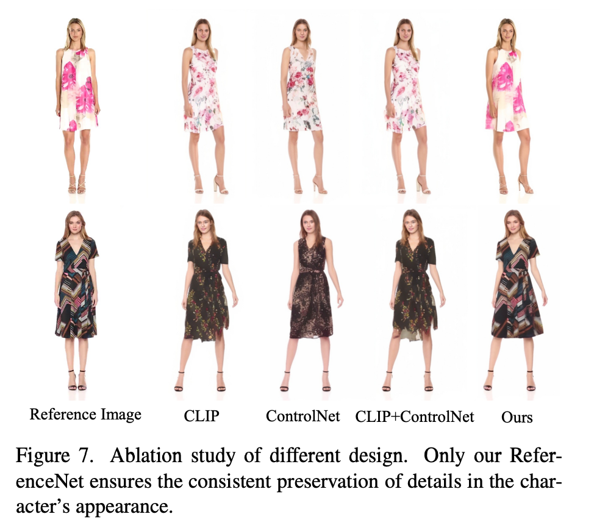

Animate Anyone: Consistent and Controllable Image-to-Video Synthesis for Character Animation#


키워드#
Image to Video, Character Animation, Stable Diffusion
Consistent generation
Temporal Attention, Spatial Attention
Preview이자 전부#

이미지 생성 모델인 stable diffusion(SD)를 활용해서 비디오 생성
이미지는 2D, 비디오는 시간 차원이 추가된 3D
모델 구조
입력: 포즈 시퀀스(\(t\) 개), 레퍼런스 이미지(\(1\) 개)
출력: 레퍼런스 이미지에 포즈 시퀀스를 반영한 \(t\) 초 비디오
3 가지 타입의 Attention 사용
Spatial-Attention, Cross-Attention, Temporal-Attention 사용
SD 사용하기 위해 텐서의 (차원 축을 늘리는) repeat, (차원 축의 순서를 바꾸는) transpose, (차원 축을 합치는) reshape를 활용
Spatial attention : 차원 축 늘리기 for 2D -> 3D 데이터 , i.e. \([b,\; h*w,\; c]\) -> \([b,\; \mathbf{t},\; h*w,\; c]\)
Cross attention : 추가된 차원 축을 batch 차원 축에 합하는 방식 for 3D -> 2D attention i.e. \([b,\; t,\; h*w,\; c]\) -> \([\mathbf{b*t},\; h*w,\; c]\)
Temporal attention : 차원 축 순서 바꾸기 for 시간 축을 고려한 attention 계산 i.e. \([b,\; t,\; h*w,\; c]\) -> \([\mathbf{b*h*w},\; \mathbf{t},\; c]\)
레퍼런스 이미지의 디테일을 잘 반영하는 새로운 attention 결합 방식 제안 => Spatial Attention Layer

Introduction#
캐릭터 애니메이션(Character Animation)은 레퍼런스 이미지에 포즈를 반영한 비디오를 생성하는 테스크
지금까지 일관성(consistency)과 일반성(generalizability)을 동시에 만족하는 방법은 없었음
일관성 문제: 동영상 내에 캐릭터 디테일들이 변함
일반성 문제: 기존 방식들 소스 캐릭터 이미지에 대해 파인튜닝함
일관성과 일반성을 만족하는 AnimateAnyone 제안
AnimateAnyone 방법 소개
(3D) Denoising Unet
비디오 생성 모델
Temporal layer 추가
multi-frame inputs을 처리할 수 있는 변형된 SD Unet 구조 사용
Spatial Attention Layer 로 self-attention 대체
레퍼런스 이미지 정보 결합 레이어
ReferenceNet
for 일관성
SD Unet과 동일 구조
레퍼런스 이미지의 spatial 정보 추출하고 denoising UNet에 결합하여 학습 => 레퍼런스 이미지의 디테일들을 더 잘 유지
Pose Guider
포즈 시퀀스 인코더
Pose Guider가 추출한 features에 노이즈를 더해서 모델에 입력 => 원하는 포즈 반영
내부 5K 데이터셋으로 모델 학습하여 SOTA 달성.
Method#
주요 구성 요소: ReferenceNet, Pose Guider, Temporal Layer
모델 구조
입력: 레퍼런스 이미지, \(t\) 초의 포즈 시퀀스
출력: \(t\) 초의 비디오
생성 프로세스
포즈 시퀀스 -> PoseGuider -> 노이즈 더하기 -> N 번 * (Denoising UNet) -> 비디오
Denoising UNet에서 레퍼런스 features 사용
레퍼런스 featuers : 레퍼런스 이미지 -> ReferenceNet -> 이미지
ReferenceNet#
기존의 방식들은 SD에 이미지 조건을 반영하기 위해 CLIP 텍스트 인코더를 CLIP 이미지 인코더로 대체하여 사용함.
디테일을 잘 유지 못하는 일관성(consistency)의 문제가 발생
CLIP은 낮은 해상도(224x224)의 이미지로 학습됨, SD는 (512x512) 이미지 생성
CLIP 학습 방식이 semantic high-level feature matching 방식, 이미지 디테일 정보 손실 있음.
레퍼런스 이미지의 디테일 정보를 더 잘 유지하기 위해 ReferenceNet 제안
ReferenceNet은 CLIP 이미지 인코더를 사용하는 (2D) SD 구조 모델
모델 SD 웨이트로 초기화
Spatial Attention layer를 통해 (3D) Denoising UNet에 레퍼런스 features 결합함.
레퍼런스 features \(t\) 번 repeat
Denoising UNet features와 \(w\) 축으로 concat
self-attention 수행
원래 UNet features에 해당하는 부분의 features만 추출
장점
SD의 feature modeling 능력 사용, 좋은 모델 초기화값
ReferenceNet과 Denoising UNet이 feature space를 공유해서 학습이 쉬워짐
ControlNet과의 차이점 
논문에서는 ControlNet의 조건(depth, edge)은 위치 align의 목적인데 여기서 레퍼런스 이미지는 위치 align이 목적이 아니기 때문에 적합하지 않다고 한다.
방식을 비교하자면
ControlNet은 attention 각자 수행 원래 output + 조건 output, dependent(연산량 2배)
AnimateAnyone은 원래 output과 조건 output concat하고 attention 수행한 뒤 원래 부분만 사용, independent(pre-compute 가능)
번외) 최근 reference 용 ControlNet도 추가 되었다. attention layer에 직접 적용하는 다른 방식
Pose Guider#
포즈 조건을 주는 방식으로 ControlNet을 사용할 수 있지만, ControlNet은 연산량 2배됨 (dependent)
light-weight 인코더 사용
Temporal Layer#
Spatial-, Cross- Attention 뒤에 수행
layer 자체는 AnimateDiff와 동일
Temporal Attention
\([b,\; t,\; h*w,\; c]\) -> \([(b*h*w,\; t,\; c)]\) -> \(t\) 축으로 self-attention 수행
일관성을 유지한 자연스러운 비디오 생성에 도움
Training Strategy#
2 단계
I stage: 레퍼런스 이미지로 타겟 포즈 생성 학습 (single frame)
II stage: 자연스러운 비디오 생성 (multi frames)
I stage
레퍼런스 이미지로 타겟 포즈 생성 학습 (single frame)
레퍼런스 이미지는 비디오 클립에서 랜덤하게 고름
학습 : denoising UNet(Temporal layer 배제), ReferenceNet, Pose Guider
초기화
denoising UNet, Reference Net: SD로 initialize
Pose Guider: Gaussian 초기화, 마지막 projection layer는 zero conv
II stage (consistency)
자연스러운 비디오 생성 (multi frames)
학습: Temporal layer in denoising UNet
초기화: AnimateDiff 모델 값
Experiments#
Implementations#
자체적으로 5K 캐릭터 비디오 클립 데이터 구축
DWPose로 포즈 시퀀스 추출
A100 4개 사용
I stage: 768x768, center-cropped, 30,000 steps, 64 batch size
II stage: 24 frame, 10,000 steps, 4 batch size, 1e-5 lr
결과#
real, animation 도메인 다 가능 
포즈 더 잘 반영 
레퍼런스 더 잘 반영 